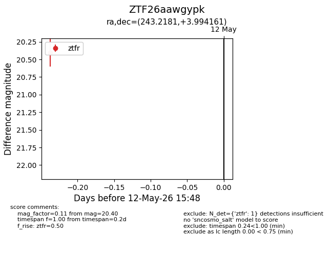
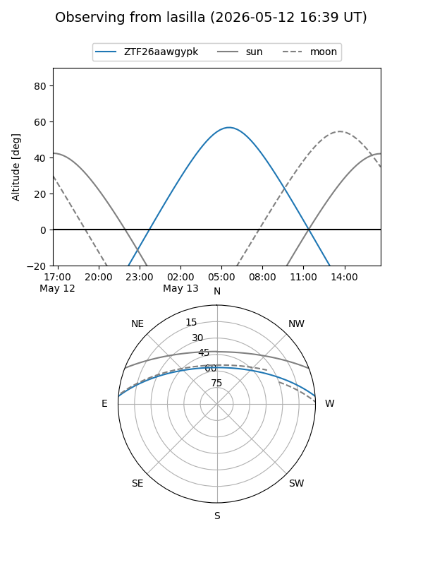
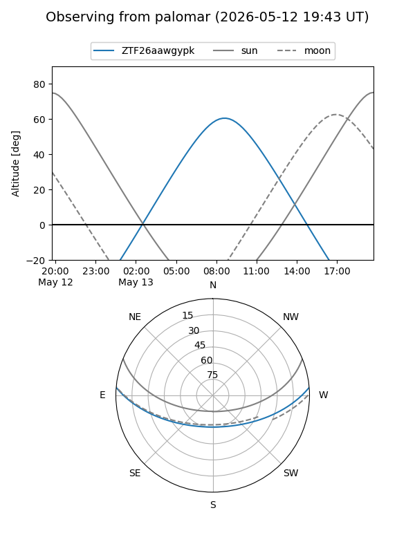

ZTF26aawgypk
Target ZTF26aawgypk at 2026-05-12 15:51
Aliases and brokers:
FINK: link
Lasair: link
ALeRCE: link
alt names
ZTF26aawgypk (ztf,fink_ztf)
Coordinates:
equatorial (ra, dec) = 243.2181,+3.99416
equatorial (HMS+DMS) = 16:12:52.35,+03:59:38.98
galactic (l, b) = (16.3864,+36.73943)
Flags:
Photometry:
last ztfr=20.40
1 ztfr detections
Lightcurve

Visibility


Additional plots